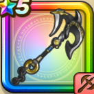

ストームアンカー
攻略班 7.0点 / たいぼく斬かぶとわりまじん斬りアンカーブロウメイルストロム※錬成で強化可能
くわしい特徴
【レベル別習得スキル】 Lv1【海賊】守備力+5 Lv1たいぼく斬（消費MP：5）植物系に威力160%それ以外の系統には130%の斬撃ダメージを与える Lv10かぶとわり（消費MP：8）敵1体に威力150%の斬撃ダメージを与え、たまに守備力を1段階下げる Lv15まじん斬り（消費MP：7）敵1体に30%の確率で斬撃ダメージの会心の一撃を与える。こころや心珠で会心率を上げても影響を受けない。 Lv20アンカーブロウ（消費MP：23）敵1体に威力320％のドルマ属性斬撃後、まれに自分の守備力を1段階上げる Lv30メイルストロム（消費MP：31）敵全体に水系なら335%、それ以外の系統には280%のバギ属性斬撃ダメージを与える Lv35水系へのダメージ+5% Lv40水系へのダメージ+5% Lv45攻撃時+2%の確率で怯えを与える Lv50攻撃力+12錬成スキル改1水系へのダメージ+10%改2メイルストロム改（消費MP：38）敵全体に水系なら500%、それ以外の系統には330%のバギ属性斬撃ダメージを与える改3ドラゴン系へのダメージ+10%改4錬成ぶき特別演出解放・メガモン討伐結果発表時に特別演出が追加・武器の見た目に特別なエフェクトが追加 【限界突破スキル】 1凸スキルの斬撃・体技ダメージ+5% 2凸スキルの斬撃・体技ダメージ+5% 3凸スキルの斬撃・体技ダメージ+5% 4凸スキルの斬撃・体技ダメージ+5%